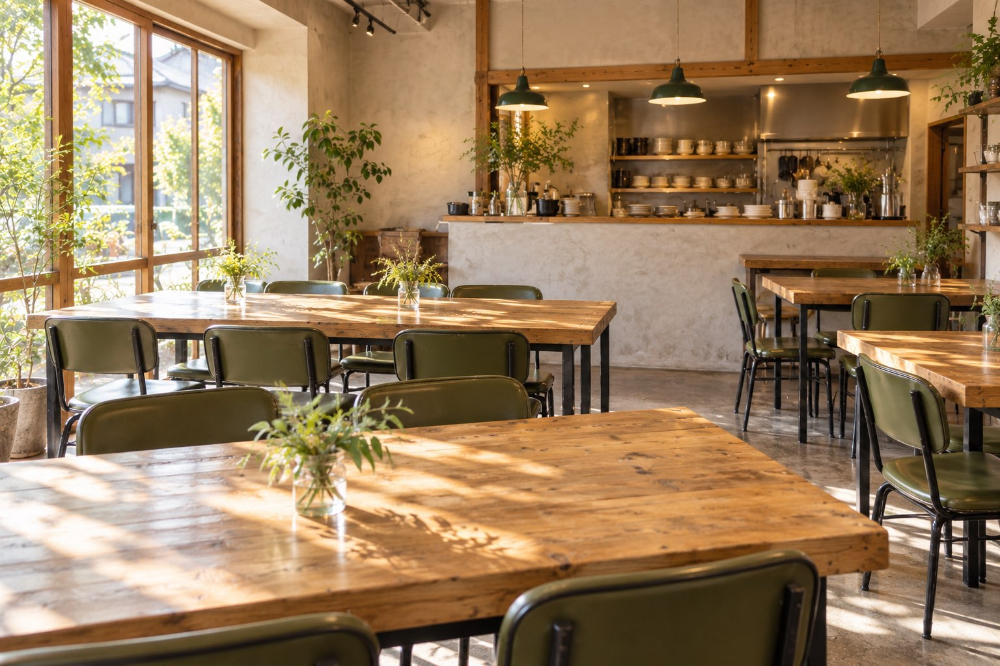

Capriceのこと
地域の、いつもの居場所に。
- ラフに仕事着のまま、ふらっと立ち寄れる。
- きちんと清潔で、安心して過ごせる。
- だれでも年齢や性別を問わず、普段使いできる。
お昼どきから、ひと息の午後、そしてこれからの夜まで。Capriceの一日を、少しだけご紹介します。
Capriceの一日
お昼から、夜まで。
ひとりでも、同僚とでも。使いかたは、その日の気分で。
-
おひる
仕事の合間に、しっかり食べたい日。
ちょうどいい、毎日のごはん。
「近くにちょうどいいお店があって助かる」と思ってもらえるごはんを、目指しています。
- おなかに適度に、満たせるように。
- からだに栄養のバランスを、考えて。
- お財布に毎日のことだから、気を配って。
-
ごご
ひとりで気持ちをゆるめたい日も、同僚と話したい日も。
コーヒーや甘いものと、それぞれのペースで。ひと息つく午後のお供に、小さな甘い時間を。
-
よる
BARとしての時間は、これから。
店名の「BAR」のとおり、夜の過ごし方も形にしていきます。内容や時間は、決まり次第お知らせします。
人と、会話
ここで過ごす時間が、誰かと出会うきっかけにもなれば。
話すことが、誰かの夢や目標へのきっかけになる。
人との出会いや会話が、誰かの夢や目標に向かうきっかけになる。そんな地域のつながりを育てたいと考えています。
それぞれのペースで
話したい人も、ひとりの時間を楽しみたい人も。どちらも心地よく過ごせる場所に。
働く私たちも
安心して意見や「やってみたいこと」を話せて、お互いの夢や目標を応援し合えるチームに。
アクセス
とりあえず、ここにしよう。
香川・三木町で、お待ちしています。
- 店名
- cafe&BAR Caprice
- 所在地
- 〒761-0613香川県木田郡三木町上高岡２１７１
- 営業時間
- 決まり次第お知らせします
- 準備中
地図は指定住所をもとに表示しています。
地図が表示されない場合はGoogle マップを開く ↗
このページは、お店のコンセプトをお伝えするための案です。写真はAIで制作したイメージで、実際の店舗・スタッフ・料理ではありません。メニュー・価格・営業時間は、決まり次第お知らせします。